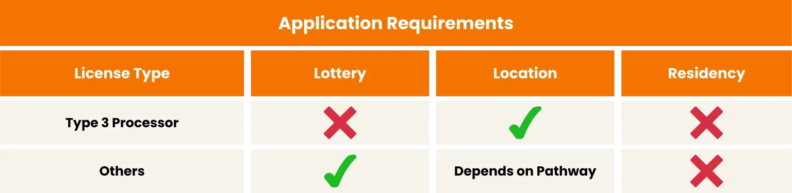
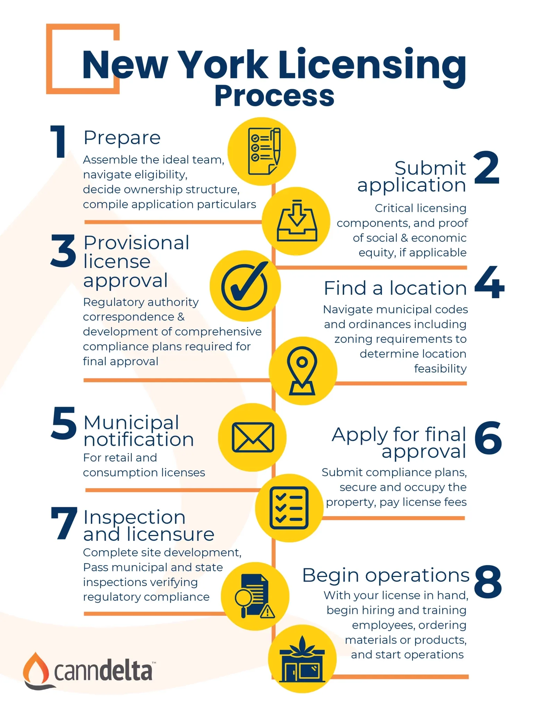
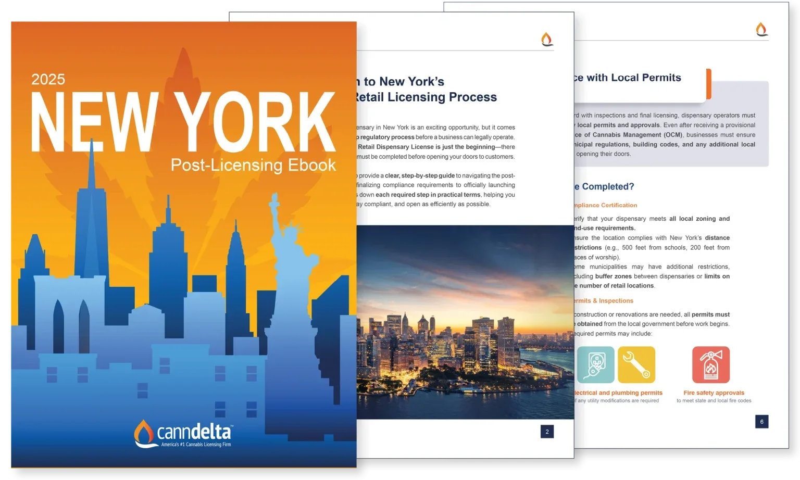

01
Cannabis License Applications
Step into the cannabis industry with confidence. Our team provides comprehensive assistance in compiling, submitting, and tracking your license application to ensure you’re compliant and competitive.
Move Confidently into the Cannabis Industry with New York's #1 cannabis consulting firm emphasizing regulatory and scientific compliance.
Accepting Type 3 Branding License Applications

The following license types can be acquired in New York:
A non-refundable application fee of $1,000 is mandatory for a New York conditional license, followed by a $7,000 license fee if approved. Remember, SEE entrepreneurs benefit from a 50% reduction in these fees, along with extra business assistance. Licenses must be renewed biennially.
Currently, New York has disclosed the application process solely for conditional cannabis cultivator, processor, and retail dispensary licenses.
The Office of Cannabis Management (OCM) will grant licenses based on applicants’ capacity to demonstrate compliance with New York’s regulations. Critical factors also include the ownership structure, team’s experience, moral character, and financial viability to implement proposed plans.
To enhance your chances, it’s imperative to strive for the highest score on your application. Given the competitive nature of acquiring a New York cannabis license, our New York cannabis consultants are available to guide you throughout the application process. Our record speaks for itself, boasting over 300 successful cannabis business launches.

FREE EBOOK
Your Step-by-Step Resource to Launching a Licensed Cannabis Dispensary in New York

At Cannadelta, we pride ourselves on being the ultimate catalysts for your cannabis venture in New York. Navigating the intricate web of cannabis licensing and business operations doesn’t have to be a daunting task. Here’s how we can assist:
Step into the cannabis industry with confidence. Our team provides comprehensive assistance in compiling, submitting, and tracking your license application to ensure you’re compliant and competitive.
Shape the future of your cannabis venture with a solid foundation. We craft business plans that not only meet regulatory standards but position you for sustained growth.
Our experts design robust security plans to protect your assets, meet state requirements, and offer peace of mind.
Streamline your day-to-day with an effective operating plan, tailor-made to enhance efficiency.
We draft SOPs that are clear, compliant, and conducive to your business’s smooth functioning.
Let’s make your brand resonate! From brand building to outreach strategies, we’ll help you carve a niche in the bustling New York cannabis market.
From recruitment strategies to tailored training modules, we ensure your staff is prepared to excel in the cannabis sector
Stay ahead of the curve. With our rigorous site audits, we identify potential issues and offer actionable solutions, ensuring you’re always in compliance and operating efficiently.
Elevate your leadership skills. Our seasoned cannabis industry veterans offer one-on-one coaching sessions, sharing insights and strategies to ensure your business thrives.
New York Cannabis License Renewals
CannDelta provides a comprehensive, turnkey service for New York cannabis entrepreneurs navigating the complex OCM license renewal process. Our experts handle the heavy lifting of regulatory reporting, from updating Community Impact Plans and verifying Labor Peace Agreements to managing Workforce Demographic submissions and Notice to Municipality filings. By acting as your compliance partner, we ensure your renewal application is submitted accurately and your license remains in good standing.
In 2022, New York initiated a Social and Economic Equity (SEE) program for the Adult-Use Cannabis Industry. This program gave those who qualified priority in the application process and a fee reduction. The program is no longer on-going, but parties that qualified as SEE applicants can still apply for licenses in the general application periods.
The Marijuana Regulation and Taxation Act (MRTA) legalizes cannabis for recreational adult-use (must be aged 21+) consumption. Under the MRTA, the Office of Cannabis Management (OCM), governed by a Cannabis Control Board, is responsible to develop regulations and issue cannabis licenses regulating the production, manufacturing, sale, and transport of recreationally (non-medical) cannabis and cannabis products in the state of New York.
If you want to grow cannabis or sell it through a retail dispensary, you need to apply for a license. The OCM licenses cultivators, processors, distributors, and dispensaries to grow and sell cannabis in New York. However, please note that the Cannabis Law does not allow individuals to have both a cultivation and retail adult-use cannabis license at the same time.
To apply for a New York cannabis cultivator or processor license, you’ll need to submit ownership information, organizational structure documents, financial disclosure information, floor and site plans, facility renderings, operating plans, community impact plans, environmental plans, application fees, and more. The OCM will determine whether to award you a license based on your ability to demonstrate your plans to adhere to New York regulations. Another major consideration is your ownership structure, team experience, moral character, and financial ability to execute your plans.
If you’re looking to open a retail dispensary, please note that the OCM is no longer accepting Conditional Adult-Use Retail Dispensary (CAURD) license applications. CAURD licensees will be the first retail dispensaries to open for legal adult-use cannabis sales in New York State.
It’s important to note that cities, towns, and villages can opt-out of allowing adult-use cannabis retail dispensaries or on-site consumption licenses from locating within their jurisdictions. However, municipalities cannot opt-out of adult-use legalization.
Visit cannabis.ny.gov/licensing for the latest information on the application process and licensing fees. Our New York cannabis consultants can help manage your application from start to finish and aim for perfect scores, with one of the highest success rates in the industry (90.12%).
Whether you call it cannabis, marijuana, or weed, the legal industry is growing in New York.
Make sure you stay up to date with the latest regulations and requirements to ensure success in this exciting industry by checking back here regularly for more updates as they develop!
The General Application Window for Cannabis Licenses for the Public Closed on December 17th, 2023 for provisional licenses. Prior to this, the non-provisional license window closed on November 17th, 2023.
Even the next application period is expected to open in March 2024 for Type 3 processor licenses, AUCCs and AUCPs transitioning to non-conditional licenses.
New York’s Conditional Adult-Use Retail Dispensary (CAURD) licenses are temporary licenses only available for “justice-involved” applicants in the first round of applicants for cannabis retail (dispensary) licensure. To be considered “justice-involved” the applicant must have a cannabis-related offense or have an immediate family member with a cannabis-related offense, who have experience owning and operating a profitable business. These individuals must show evidence of running a profitable business for two (2) consecutive years.
The Cannabis Control Board (CCB) received 903 applications for the Conditional Adult-Use Retail Dispensary in the summer of 2022, and awarding 463 total licenses in late into 2022 and 2023. This has allowed the first cannabis retail store (or dispensary) to open before the end of 2022, which was selling New York first regulated and tested cannabis products. New York’s implementation of conditional cannabis licenses will assist the state in catching up with its neighbors in the Tri-state area, New Jersey and Connecticut, and has allowed recreational cannabis (non-medical or adult-use cannabis).
Conditional licenses are valid for four (4) years from the date of license issuance by the OCM. License holders may apply to convert their “Conditional Adult-Use Retail Dispensary License” to a standard, “Adult-Use Dispensary License” prior to its expiration. License holders would be required to enter a labor peace agreement with a bona fide labor organization. Note, this is not to be confused with the State of New Jersey. New Jersey’s conditional licenses are meant to allow people to obtain adult-use cannabis licenses without large amounts of capital pre-application.
Anyone. In the first round of licensure, the adult-use (non-medical/recreational) dispensary (cannabis retail) licensing process is designed to favor those that have a past conviction of a cannabis offense or have a close relationship with someone who has been charged and convicted with a cannabis-related offense. We refer to this as “justice-involved” individuals.
Applicants will also need to prove that they have had at least 10% ownership in a profitable business for at least two years.
Residency Requirement
A majority of the ownership of the applying company/entity must have been in New York State for 180 days within the last year, or 540 days within the last three years.
Conviction Requirements
The applicant, of if the applicant was dependent to must have been convicted of a cannabis-related offense in New York State at any time prior to 3/31/2021.
Business Requirements
You need to have held at least 10% ownership for two years in a business that had at least two years of net profit.
Or if you’ve owned at least part of a non-profit, a non-profit that has all the following:
Ownership Percentages
The entity with sole control of the applying business and at least 30% of the ownership interest must meet the residency requirement AND the conviction and for-profit business requirement OR the non-profit business requirement.
In addition, at least 51% of the applying business’s ownership interest must 1) meet residency requirement AND the conviction and for-profit business requirement OR the non-profit business requirement or 2) the conviction requirement.
You were eligible for a Conditional Adult-Use Retail Dispensary license if you are an applicant (a business or entity) that satisfies the following:
Alternatively, applicants can be:
CannDelta has successfully helped acheive CAURD Licencses from the Office of Cannabis Management (the “OCM”).
It is believed that the OCM will continue to prioritize applications that are classified with a social equity component as the application process opens up in Summer 2023.
The costs per license application is $2,000 (non-refundable) and each license allows for the opening of a single location. Each operator may hold a maximum of three licenses and operators cannot be vertically integrated i.e. it’s not possible to cultivate, process or manufacture, and distribute, etc.v
Cannabis Control Board (CCB)
Issues/inspects/revokes licenses, registrations, permits
Limits/halts number of licenses
Approves social equity plans
Office of Cannabis Management (OCM)
Issues/inspects/revokes licenses, registrations, permits
Limits/halts number of licenses
Approves social equity plans
State Cannabis Advisory Board
Advises and recommends cannabis use of all types
Governs and administers Reinvestment Funds
To be eligible for an Adult-Use Conditional Cultivator License an applicant must meet all of the following:
To open a dispensary or a consumption lounge in the state of New York, you’ll need the following:
License application and regulatory fees vary depending on the license you are seeking. The minimum application fee for any license in New York is $1,000.
In terms of total overall costs, please contact our office so we can learn more about your goals, your situation and provide with you an accurate estimate of how much it will cost to open a cannabis business in New York.
There are currently 74 adult-use cannabis dispensaries across New York State.
To verify the legitimacy of a New York Cannabis Adult-use Retail Dispensary License, use this State-run verification tool.
Find Attached a list and corresponding map (provided by Google) of the Municipalities that have opted-in and opted-out for cannabis retail dispensaries and consumption lounges for adult-use:
These towns/cities have opted-in to Cannabis Retail Dispensaries and/or Consumption Lounges:
| Municipality Name |
| City of Watervliet |
| Town of Coeymans |
| Town of Colonie |
| Town of Guilderland |
| Village of Menands |
| Village of Ravena |
| Town of Bethlehem |
| Town of Rensselaerville |
| Town of Westerlo |
| Village of Voorheesville |
| Village of Green Island |
| Village of Altamont |
| Town of Alfred |
| Town of Cuba |
| Town of Alma |
| Town of Amity |
| Town of Andover |
| Town of Angelica |
| Town of Belfast |
| Town of Caneadea |
| Town of Clarksville |
| Town of Hume |
| Town of Independence |
| Town of New Hudson |
| Town of Rushford |
| Town of Willing |
| Village of Angelica |
| Village of Belmont |
| Village of Bolivar |
| Village of Wellsville |
| Town of Friendship |
| Town of Union |
| Town of Fenton |
| Town of Kirkwood |
| Town of Nanticoke |
| Town of Windsor |
| Town of Barker |
| Town of Great Valley |
| Town of Randolph |
| Village of Portville |
| Town of Conewango |
| Town of Dayton |
| Town of Ashford |
| Town of Carrollton |
| Town of Coldspring |
| Town of East Otto |
| Town of Farmersville |
| Town of Franklinville |
| Town of Humphrey |
| Town of Mansfield |
| Town of Perrysburg |
| Town of Persia |
| Town of Portville |
| Town of South Valley |
| Village of Delevan |
| Village of South Dayton |
| Village of Gowanda |
| Town of Cato |
| Village of Union Springs |
| Town of Conquest |
| Town of Brutus |
| Town of Genoa |
| Town of Ira |
| Town of Ledyard |
| Town of Locke |
| Town of Mentz |
| Town of Niles |
| Town of Scipio |
| Town of Sennett |
| Town of Springport |
| Town of Summerhill |
| Town of Venice |
| Village of Fair Haven |
| Village of Aurora |
| Village of Cato |
| Village of Morava |
| Village of Port Byron |
| Village of Weedsport |
| Town of Fleming |
| Town of Mina |
| Village of Panama |
| Town of Cherry Creek |
| Town of French Creek |
| Town of Ellery |
| Town of Busti |
| Town of Carroll |
| Town of Charlotte |
| Town of Chautauqua |
| Town of Clymer |
| Town of Ellicott |
| Town of Ellington |
| Town of Gerry |
| Town of Kiantone |
| Town of North Harmony |
| Town of Poland |
| Town of Portland |
| Town of Ripley |
| Town of Sheridan |
| Town of Sherman |
| Town of Stockton |
| Town of Villenova |
| Village of Bemus Point |
| Village of Brocton |
| Village of Cassadaga |
| Village of Falconer |
| Village of Lakewood |
| Village of Mayville |
| Village of Silver Creek |
| Village of Sinclairville |
| Town of Harmony |
| Town of Hanover |
| Village of Celoron |
| Town of Ashland (Chemung County) |
| Town of Horseheads |
| Village of Horseheads |
| Town of Catlin |
| Town of Baldwin |
| Town of Big Flats |
| Town of Chemung |
| Town of Elmira |
| Town of Erin |
| Town of Southport |
| Town of Van Etten |
| Town of Veteran |
| Village of Elmira Heights |
| City of Norwich |
| Town of Bainbridge |
| Town of Guilford |
| Town of Pitcher |
| Village of Smyrna |
| Town of Greene |
| Village of Afton |
| Town of Afton |
| Town of New Berlin |
| Town of Norwich |
| Town of Otselic |
| Town of Oxford |
| Town of Sherburne |
| Town of Smithville |
| Town of Smyrna |
| Village of Greene |
| Village of New Berlin |
| Village of Sherburne |
| Town of Chazy |
| Village of Rouses Point |
| Town of Canaan |
| Town of Ancram |
| Town of Claverack |
| Town of Copake |
| Town of Greenport |
| Village of Chatham |
| Village of Kinderhook |
| Village of Valatie |
| Town of Clermont |
| Town of Livingston |
| Town of Chatham |
| Town of Preble |
| Village of Marathon |
| Town of Lapeer |
| Town of Cortlandville |
| Town of Willet |
| Town of Cuyler |
| Town of Truxton |
| Town of Virgil |
| Village of Franklin |
| Town of Franklin (Delaware County) |
| Village of Hobart |
| Town of Andes |
| Town of Bovina |
| Town of Hamden |
| Town of Masonville |
| Town of Roxbury |
| Town of Stamford |
| Town of Walton |
| Village of Sidney |
| Village of Stamford |
| Town of Fishkill |
| Town of Clinton |
| Town of North East |
| Town of Pine Plains |
| Town of Poughkeepsie |
| Town of Red Hook |
| Village of Red Hook |
| Town of Amenia |
| Town of Beekman |
| Town of Dover |
| Town of East Fishkill |
| Town of Hyde Park |
| Town of LaGrange |
| Town of Pawling |
| Town of Pleasant Valley |
| Town of Rhinebeck |
| Town of Stanford |
| Town of Union Vale |
| Town of Wappinger |
| Town of Washington |
| Village of Millbrook |
| Village of Pawling |
| Village of Rhinebeck |
| Village of Tivoli |
| Village of Wappingers Falls |
| Town of Milan |
| Town of Tonawanda |
| Village of Kenmore |
| Town of Grand Island |
| Town of Hamburg |
| Town of Orchard Park |
| Town of West Seneca |
| Village of Angola |
| Village of East Aurora |
| Town of Alden |
| Town of Aurora |
| Town of Brant |
| Town of Colden |
| Town of Collins |
| Town of Elma |
| Town of Holland |
| Town of Lancaster |
| Town of Marilla |
| Town of Newstead |
| Town of North Collins |
| Town of Sardinia |
| Town of Wales |
| Village of Akron |
| Village of Alden |
| Village of Hamburg |
| Village of Orchard Park |
| Village of Williamsville |
| Town of Elizabethtown |
| Town of Essex |
| Town of Jay |
| Town of Keene |
| Town of Newcomb |
| Town of North Elba |
| Town of Schroon |
| Town of St. Armand |
| Town of Ticonderoga |
| Town of Wilmington |
| Town of Chesterfield |
| Town of Lewis (Essex County) |
| Town of Santa Clara |
| Town of Constable |
| Town of Dickinson |
| Town of Duane |
| Town of Fort Covington |
| Town of Franklin (Franklin County) |
| Town of Harrietstown |
| Village of Malone |
| Village of Broadalbin |
| Town of Northampton |
| Town of Bleecker |
| Village of Elba |
| Town of LeRoy |
| Village of Alexander |
| Village of Oakfield |
| Town of Alexander |
| Town of Batavia |
| Town of Bethany |
| Town of Byron |
| Town of Elba |
| Town of Oakfield |
| Town of Stafford |
| Village of Bergen |
| Village of LeRoy |
| Town of Alabama |
| Town of Bergen |
| Town of Catskill |
| Town of Lexington |
| Town of Hunter |
| Town of Greenville (Greene County) |
| Town of Cairo |
| Town of Ashland (Greene County) |
| Town of Durham |
| Town of Halcott |
| Town of Jewett |
| Town of New Baltimore |
| Town of Prattsville |
| Town of Windham |
| Village of Hunter |
| Town of Inlet |
| Town of Arietta |
| Town of Lake Pleasant |
| Town of Morehouse |
| Town of Wells |
| Village of Speculator |
| Town of Litchfield |
| Town of Russia |
| Town of Schuyler |
| Village of Ilion |
| Village of Middleville |
| Village of Dolgeville |
| Town of German Flatts |
| Village of Cold Brook |
| Village of Mohawk |
| Town of Henderson |
| Town of Wilna |
| Village of Brownville |
| City of Watertown |
| Town of Adams |
| Town of Alexandria |
| Town of Brownville |
| Town of Cape Vincent |
| Town of Champion |
| Town of Clayton |
| Town of Ellisburg |
| Town of Hounsfield |
| Town of LeRay |
| Town of Lyme |
| Town of Philadelphia |
| Town of Rodman |
| Town of Theresa |
| Town of Watertown |
| Town of Worth |
| Village of Adams |
| Village of Alexandria Bay |
| Village of Cape Vincent |
| Village of Chaumont |
| Village of Clayton |
| Village of Deferiet |
| Village of Dexter |
| Village of Philadelphia |
| Village of Black River |
| Village of Croghan |
| Village of Port Leyden |
| Town of Montague |
| Town of Croghan |
| Town of Denmark |
| Town of Lowville |
| Town of Martinsburg |
| Town of New Bremen |
| Town of Osceola |
| Town of Turin |
| Town of Watson |
| Town of West Turin |
| Village of Castorland |
| Village of Constableville |
| Village of Copenhagen |
| Village of Lowville |
| Village of Turin |
| Town of Greig |
| Town of Lewis |
| Town of Diana |
| Town of Harrisburg |
| Town of Pinckney |
| Town of Conesus |
| Town of Geneseo |
| Town of Ossian |
| Village of Dansville |
| Village of Geneseo |
| Village of Nunda |
| Town of Eaton |
| Town of Smithfield |
| Village of Munnsville |
| City of Oneida |
| Town Cazenovia |
| Town of Brookfield |
| Town of DeRuyter |
| Town of Fenner |
| Town of Georgetown |
| Town of Lenox |
| Town of Nelson |
| Town of Sullivan |
| Village of Cazenovia |
| Village of Chittenango |
| Village of DeRuyter |
| Village of Wampsville |
| Village of Morrisville |
| Village of Hamilton |
| Village of Canastota |
| Town of Henrietta |
| Town of Chili |
| Town of Clarkson |
| Town of Gates |
| Town of Greece |
| Town of Hamlin |
| Town of Mendon |
| Town of Ogden |
| Town of Parma |
| Town of Perinton |
| Town of Pittsford |
| Town of Riga |
| Town of Sweden |
| Town of Webster |
| Village of Churchville |
| Village of Hilton |
| Village of Pittsford |
| Village of Scottsville |
| Village of Webster |
| Town of Penfield |
| Town of Amsterdam |
| Village of Fort Plain |
| Village of Fultonville |
| Town of Glen |
| Village of Flower Hill |
| Village of South Floral Park |
| Village of Valley Stream |
| Village of Plandome Manor |
| Village of Island Park |
| Village of East Rockaway |
| Village of East Hills |
| City of Glen Cove |
| City of Long Beach |
| Village of Lynbrook |
| Village of Bellerose |
| Village of Floral Park |
| Village of Laurel Hollow |
| Village of Lawrence |
| Village of Matinecock |
| Village of Sea Cliff |
| Village of Williston Park |
| Village of Atlantic Beach |
| Village of Cedarhurst |
| Village of Freeport |
| Village of Garden City |
| Village of Hempstead |
| Village of Malverne |
| Village of Manorhaven |
| Village of Massapequa Park |
| Village of Old Westbury |
| Village of Roslyn Harbor |
| Village of Sands Point |
| Town of Hempstead |
| Town of North Hempstead |
| Town of Oyster Bay |
| Village of Bayville |
| Village of Brookville |
| Village of Centre Island |
| Village of Cove Neck |
| Village of Great Neck |
| Village of Great Neck Estates |
| Village of Great Neck Plaza |
| Village of Hewlett Bay Park |
| Village of Hewlett Neck |
| Village of Kensington |
| Village of Lattingtown |
| Village of Mineola |
| Village of Munsey Park |
| Village of Muttontown |
| Village of New Hyde Park |
| Village of Old Brookville |
| Village of Plandome Heights |
| Village of Port Washington North |
| Village of Rockville Centre |
| Village of Roslyn |
| Village of Roslyn Estates |
| Village of Russell Gardens |
| Village of Stewart Manor |
| Village of Thomaston |
| Village of Upper Brookville |
| Village of Westbury |
| Village of Woodsburgh |
| Village of East Williston |
| Village of Farmingdale |
| Village of North Hills |
| Village of Youngstown |
| Town of Cambria |
| Town of Hartland |
| Town of Pendleton |
| Town of Royalton |
| Town of Somerset |
| Town of Wilson |
| Village of Middleport |
| Town of Niagara |
| Village of Waterville |
| City of Sherrill |
| Village of Clinton |
| Town of Boonville |
| Town of Bridgewater |
| Town of Florence |
| Town of Lee |
| Town of Vernon |
| Town of Westmoreland |
| Village of Camden |
| Village of Clayville |
| Village of Oneida Castle |
| Village of Fayetteville |
| Town of Lysander |
| Town of Onondaga |
| Town of Salina |
| Town of Skaneateles |
| Town of Van Buren |
| Town of LaFayette |
| Village of Camillus |
| Village of Solvay |
| Town of Cicero |
| Town of Camillus |
| Town of Elbridge |
| Town of Fabius |
| Town of Otisco |
| Town of Pompey |
| Town of Tully |
| Village of Baldwinsville |
| Village of Elbridge |
| Village of Fabius |
| Village of Jordan |
| Village of Liverpool |
| Village of Manlius |
| Village of Marcellus |
| Village of Minoa |
| Village of Skaneateles |
| City of Canandaigua |
| Town of Victor |
| Village of Victor |
| Town of Bristol |
| Town of Canandaigua |
| Town of Farmington |
| Town of Hopewell |
| Town of Manchester |
| Town of Naples |
| Town of Richmond |
| Town of Seneca |
| Village of Shortsville |
| Town of South Bristol |
| Town of East Bloomfield |
| Town of Gorham |
| Town of West Bloomfield |
| City of Port Jervis |
| Town of Tuxedo |
| Town of Warwick |
| Town of Wawayanda |
| Tuxedo Park |
| Town of Greenville (Orange County) |
| City of Middletown |
| Town of Blooming Grove |
| Town of Chester (Orange County) |
| Town of Cornwall |
| Town of Crawford |
| Town of Deerpark |
| Town of Goshen |
| Town of Hamptonburgh |
| Town of Highlands |
| Town of Minisink |
| Town of Monroe |
| Town of Montgomery |
| Town of Mount Hope |
| Town of New Windsor |
| Town of Wallkill |
| Village of Chester |
| Village of Cornwall-on-Hudson |
| Village of Florida |
| Village of Goshen |
| Village of Greenwood Lake |
| Village of Harriman |
| Village of Highland Falls |
| Village of Maybrook |
| Village of Montgomery |
| Village of South Blooming Grove |
| Village of Unionville |
| Village of Warwick |
| Village of Washingtonville |
| Village of Otisville |
| Village of Monroe |
| Village of Medina |
| Village of Albion |
| Town of Barre |
| Town of Carlton |
| Town of Gaines |
| Town of Murray |
| Town of Ridgeway |
| Town of Shelby |
| Village of Holley |
| Village of Lyndonville |
| Town of Albion (Orleans County) |
| Town of Clarendon |
| Town of Yates |
| Town of Albion (Oswego County) |
| Town of Amboy |
| Town of Constantia |
| Town of New Haven |
| Town of Orwell |
| Town of Palermo |
| Town of Redfield |
| Town of Richland |
| Town of Volney |
| Town of Williamstown |
| Village of Central Square |
| Village of Cleveland |
| Village of Lacona |
| Village of Mexico |
| Town of Mexico |
| Village of Cooperstown |
| Town of Richfield |
| Town of Otsego |
| Town of Westford |
| Town of Worcester |
| Village of Gilbertsville |
| Village of Brewster |
| Town of Carmel |
| Town of Kent |
| Town of Patterson |
| Town of Philipstown |
| Town of Southeast |
| Village of Nelsonville |
| Village of Cold Spring |
| Town of Putnam Valley |
| Town of Brunswick |
| Town of East Greenbush |
| Town of Hoosick |
| Town of Nassau |
| Town of North Greenbush |
| Town of Schodack |
| Village of Nassau |
| Town of Berlin |
| Town of Sand Lake |
| Village of Valley Falls |
| Village Chestnut Ridge |
| Village of Nyack |
| Village of Piermont |
| Village of Suffern |
| Village of Kaser |
| Village of Grand View-on-Hudson |
| Town of Clarkstown |
| Town of Orangetown |
| Town of Ramapo |
| Town of Stony Point |
| Village of New Hempstead |
| Village of New Square |
| Village of Pomona |
| Village of Sloatsburg |
| Village of West Haverstraw |
| Village of Airmont |
| City of Mechanicville |
| Town of Ballston |
| Town of Halfmoon |
| Town of Milton |
| Town of Saratoga |
| Town of Waterford |
| Village of Stillwater |
| Village of Galway |
| Town of Charlton |
| Town of Clifton Park |
| Town of Edinburg |
| Town of Galway |
| Town of Malta |
| Town of Moreau |
| Town of Northumberland |
| Town of Providence |
| Town of Wilton |
| Village of Victory |
| Village of Waterford |
| Town of Day |
| Town of Glenville |
| Town Niskayuna |
| Town of Princetown |
| Village of Middleburgh |
| Village of Cobleskill |
| Town of Fulton |
| Town of Jefferson |
| Town of Richmondville |
| Town of Sharon |
| Town of Summit |
| Village of Sharon Springs |
| Village of Richmondville |
| Town of Cayuta |
| Town of Tyrone |
| Village of Burdett |
| Village of Montour Falls |
| Village of Odessa |
| Village of Waterloo |
| Town of Varick |
| Town of Covert |
| Town of Fayette |
| Town of Ovid |
| Village of Ovid |
| Town of Massena |
| Village of Massena |
| Town of DeKalb |
| Town of Brasher |
| Town of Fowler |
| Town of Hammond |
| Town of Hopkinton |
| Town of Madrid |
| Town of Norfolk |
| Village of Hammond |
| Village of Heuvelton |
| Village of Savona |
| City of Corning |
| Town of Lindley |
| Town of Wheeler |
| Town of Howard |
| Town of Greenwood |
| Town of Canisteo |
| Town of Jasper |
| Village of Avoca |
| Village of North Hornell |
| Town Campbell |
| Town of Addison |
| Town of Cameron |
| Town of Caton |
| Town of Corning |
| Town of Dansville |
| Town of Erwin |
| Town of Fremont (Steuben County) |
| Town of Hartsville |
| Town of Hornellsville |
| Town of Thurston |
| Town of Troupsburg |
| Town of Tuscarora |
| Town of Urbana |
| Town of Wayne |
| Village of Addison |
| Village of Arkport |
| Village of Canisteo |
| Village of Hammondsport |
| Village of Riverside |
| Village of South Corning |
| Village of Wayland |
| City of Hornell |
| Town of Avoca |
| Town of Bath |
| Village of Nissequogue |
| Village of Lake Grove |
| Village of Sag Harbor |
| Village of Quogue |
| Village of Lindenhurst |
| Village of Bellport |
| Village of Babylon |
| Village of Sagaponack |
| Village of Shoreham |
| Village of Northport |
| Village of Brightwaters |
| Village of Port Jefferson |
| Village of Ocean Beach |
| Town of East Hampton |
| Town of Huntington |
| Town of Islip |
| Town of Shelter Island |
| Town of Smithtown |
| Town of Southold |
| Village of Amityville |
| Village of Dering Harbor |
| Village of East Hampton |
| Village of Greenport |
| Village of Islandia |
| Village of Lloyd Harbor |
| Village of Patchogue |
| Village of Saltaire |
| Village of Southampton |
| Village of The Branch |
| Village of Westhampton Beach |
| Village of Poquott |
| Town of Highland |
| Town of Callicoon |
| Town of Cochecton |
| Town of Lumberland |
| Town of Neversink |
| Town of Tusten |
| Town of Fremont (Sullivan County) |
| Village of Newark Valley |
| Village of Waverly |
| Town of Barton |
| Town of Newark Valley |
| Town of Owego |
| Town of Richford |
| Town of Spencer |
| Town of Tioga |
| Village of Nichols |
| Village of Spencer |
| Village of Lansing |
| Village of Dryden |
| Village of Freeville |
| Town of Groton |
| Town of Lansing |
| Village of Groton |
| Town of Caroline |
| Town of Ulster |
| Town of Saugerties |
| Town of Esopus |
| Town of Shawangunk |
| Town of Wawarsing |
| Town of Gardiner |
| Town of Kingston |
| Town of Plattekill |
| Town of Bolton |
| Town of Chester (Warren County) |
| Town of Horicon |
| Town of Lake George |
| Town of Stony Creek |
| Village of Lake George |
| Village of Fort Edward |
| Town of Granville |
| Town of Kingsbury |
| Town of Hampton |
| Town of Walworth |
| Town of Cortlandt |
| Town of Greenburgh |
| Town of Ossining |
| Village Hastings-on-Hudson |
| Village of Croton-on-Hudson |
| Village of Ossining |
| Village of Tarrytown |
| Town of Bedford |
| Town of Eastchester |
| Town of Harrison |
| Village of Harrison |
| Town of Lewisboro |
| Town of Mamaroneck |
| Town of Mount Pleasant |
| Town of New Castle |
| Town of North Castle |
| Town of North Salem |
| Town of Scarsdale |
| Village of Scarsdale |
| Town of Somers |
| Village of Briarcliff Manor |
| Village of Bronxville |
| Village of Buchanan |
| Village of Dobbs Ferry |
| Village of Elmsford |
| Village of Irvington |
| Village of Pelham |
| Village of Pelham Manor |
| Village of Pleasantville |
| Village of Port Chester |
| Village of Rye Brook |
| Village of Tuckahoe |
| Village of Mount Kisco |
| Town of Mount Kisco |
| City of Rye |
| Town of Yorktown |
| Village of Ardsley |
| Village of Larchmont |
| Village of Mamaroneck |
| Village of Attica |
| Town of Bennington |
| Village of Wyoming |
| Village of Gainesville |
| Town of Attica |
| Town of Wethersfield |
| Town of Castile |
| Town of Middlebury |
| Town of Orangeville |
| Town of Perry |
| Town of Pike |
| Town of Warsaw |
| Village of Perry |
| Village of Silver Springs |
| Town of Gainesville |
| Town of Covington |
| Village of Castile |
| Village of Dresden |
| Town of Benton |
| Town of Jerusalem |
| Town of Middlesex |
| Town of Potter |
The CAURD licensing program was put on pause in late 2023 after an injunction was filed.
The Coalition for Access to Regulated & Safe Cannabis (CARSC), also known as the Registered Organizations (ROs), initiated legal action in Albany’s state court. They levied accusations against regulatory bodies for mishandling the launch of New York’s cannabis market, which they claimed obstructed the entry of licensed entities and enabled the proliferation of unlicensed vendors (referencing Coalition for Access to Regulated & Safe Cannabis v. New York, Index No. 902390-2023, filed in N.Y. Supreme Court, Albany County on Mar. 16, 2023).
This backdrop set the stage for the CARSC and Fiore disputes, which were ultimately settled in a manner akin to the Variscite case. These settlements not only provided licenses to the complainants but also instituted a pause on new CAURD applications, though it allowed for the processing of existing ones.
If the window is closed, you may potentially opt to invest with a current license holder.
Licensees awarded from the general application round may work investors without needing to declare anyone if they remain under the 10% threshold of ownership.
CAURD licenses are permitted to sell up to 49% of their equity for a period of three years after licensure. At which time, they may choose to divest entirely.
If you are a CAURD holder or an investor, contact CannDelta today to learn about opportunities!
CannDelta can help you get opened fasted by streamlining your operations. See attahed for a list of items that we can assist with!
USA